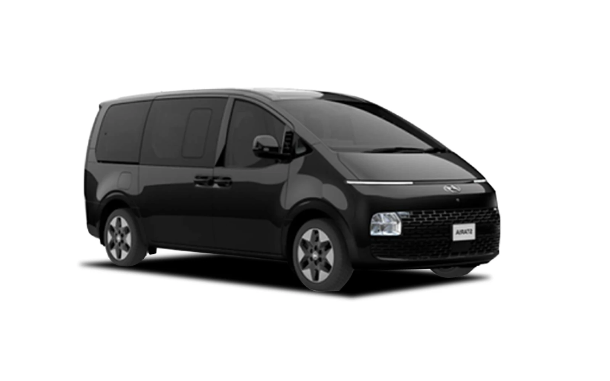

전용 차량 기사 포함 도어투도어Private Car Chauffeur Service
공항에서 강릉까지, 또는 강릉 내에서 원하는 일정에 맞추어 편하게 이용할 수 있습니다.Travel comfortably on your own schedule — from the airport to Gangneung, or around Gangneung.
전용 차량 예약Book a Private Car
일정·인원에 맞는 차량을 선택해 바로 예약하세요 · 기사 포함 도어투도어Select a vehicle that fits your schedule and party, then book instantly · door-to-door with chauffeur
제공 차종Our Fleet
이용 인원과 짐에 맞춰 선택하세요Choose by party size and luggage

FIRST CLASS SEDAN
Genesis G90
최대 3인 · 캐리어 3개Up to 3 · 3 bags

PREMIUM VAN
Staria
최대 7인 · 캐리어 6개Up to 7 · 6 bags

GROUP COACH
Hyundai Solati
8~13인 · 수하물 자유8–13 · Ample luggage
* 요금은 출발지·거리·일정에 따라 산정되며, 문의·예약 시 안내됩니다.* Fares are calculated by pickup location, distance and itinerary, and are provided when you enquire or book.
이용 안내How It Works
예약Booking
- 사전 예약이 필수입니다 — 당일 현장 예약은 불가합니다.Advance booking is required — same-day on-site booking is not available.
- 픽업 시간 기준 최소 24시간 전에 예약해 주세요.Please book at least 24 hours before your pickup time.
- 취소는 픽업 12시간 전까지 가능하며, 늦은 취소는 수수료가 발생할 수 있습니다.Cancellations are accepted up to 12 hours before pickup; late cancellations may incur a fee.
- 예약 확정 시 발송되는 바우처(목업)에 드라이버 연락처가 포함됩니다.The voucher (mockup) sent on confirmation includes your driver's contact details.
- 요청 시 인천·김포공항 국제선 도착층에서 미트앤그리트(미팅보드 영접)를 제공합니다.On request, a meet-and-greet (name-board welcome) is provided at the international arrivals hall of Incheon and Gimpo airports.